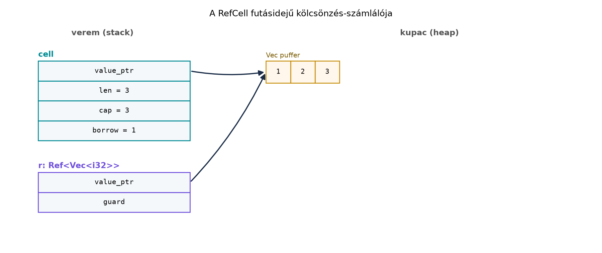

Egy C++-os osztályban a const tagfüggvény fő szabálya,
hogy nem módosíthatja az objektum megfigyelhető állapotát. Mégis
gyakori, hogy egy const metódus gyorsítótárazni szeretne,
vagy számlálnia kell a hívásait. Erre a C++ a mutable
kulcsszót adja:
struct Cache {
mutable std::unordered_map<std::string, std::string> cache;
std::string get(const std::string& key) const {
auto it = cache.find(key);
if (it != cache.end()) return it->second;
std::string value = expensive(key);
cache.emplace(key, value);
return value;
}
};A get tehát const, mégis írja a
cache tagot. A Rust ugyanezt alapból megtiltja: egy
&self metódus nem kaphat &mut self-et.
A probléma természetesen nem a cache-elés, hanem az, hogy a megosztott
referencián keresztüli módosítás megsértheti a kölcsönzési szabályt. A Rust a belső
mutabilitás (interior mutability) eszközeivel ad szabályozott,
típusos kivételt ez alól.
Definíció (belső mutabilitás). A belső mutabilitás
olyan minta, amelyben egy &T megosztott referencián
keresztül elérhető érték belsejét megváltoztathatjuk anélkül,
hogy magára az értékre &mut T kizárólagos referenciát
vennénk.
Szabály. A &T referencián keresztül
a Rust típusrendszere alapból tiltja a mutálást. A
Cell<T> és a RefCell<T> típusok
UnsafeCell<T>-re épülve biztonságos, ellenőrzött
felületet adnak erre. A biztonságot két különböző módon érik el: a
Cell megszorított API-val (soha nem ad referenciát
a belsejére, ezért nincs futásidejű ellenőrzés), a RefCell
futásidejű kölcsönzés-számlálóval.
A két alaptípus közötti választást a következő táblázat foglalja össze:
| Kérdés | Választás |
|---|---|
T Copy, és csak egész értéket cserélünk
vagy olvasunk |
Cell<T> |
Nagy vagy összetett T, és referenciát akarunk kiadni a
belső adatra |
RefCell<T> |
| Több szálból akarjuk módosítani | sem Cell, sem RefCell; később
Mutex/RwLock |
Definíció (Cell<T>). A
Cell<T> a belső értéket csak teljes egészében engedi
kiolvasni vagy lecserélni, referenciát a belsejére nem ad ki. A
get metódus megköveteli a T: Copy határt, mert
másolatot ad. Ez a feltétel csak a get-re
vonatkozik: a set, a replace és a
swap bármilyen T-vel működik, a
take pedig T: Default-ot kér (a helyére az
alapértéket teszi). A Cell<String> tehát nem
get-elhető, de replace-elhető és
take-elhető: c.replace(String::from("körte"))
visszaadja a régi String-et, c.take() pedig
kiveszi az értéket és üres String-et hagy. Mivel a
Cell sosem ad referenciát a belsejére, nem keletkezhet
aliasolás a belső értékre; a szabályt az API-ja tartja be, nem
futásidejű ellenőrzés.
Definíció (RefCell<T>). A
RefCell<T> futásidejű kölcsönzés-számlálót tart
nyilván. A borrow() metódus Ref<T>, a
borrow_mut() pedig RefMut<T> guardot ad.
Ha a szabályt megsértjük – például élő Ref mellett kérünk
RefMut-ot –, akkor a program pánikol,
tipikusan already borrowed üzenettel. A pánikmentes
változatok a try_borrow() és try_borrow_mut(),
amelyek Result-ot adnak vissza.
A UnsafeCell<T> a nyelv egyetlen olyan építőköve,
amely megosztott referenciából is enged nyers *mut T
mutatót képezni. Két dolgot kell szétválasztani: a mutató
létrehozása (UnsafeCell::get) safe művelet, a
mutató dereferálása viszont unsafe, és az
aliasing-szabályok betartásáért ilyenkor a programozó felel. A
Cell és a RefCell ezt az unsafe
alapot csomagolják biztonságos API-ba; a UnsafeCell
közvetlen használatát a Unsafe Rust:
szuperképességek és felelősség alfejezet tárgyalja.
Továbbvitt eredmény. A Cell és
RefCell belső mutabilitási mintái egyetlen szálon kijelölik
azokat a határokat, amelyeket a Mutex, RwLock,
csatornák és a megosztott rkv alfejezet a szálbiztos
Mutex/RwLock guardokkal, a Unsafe Rust: szuperképességek és felelősség pedig
az UnsafeCell közvetlen, unsafe használatával
visznek tovább.
A következő memóriaábra a RefCell futásidejű flagjét
mutatja:

A Ref guard tehát nem maga a Vec, hanem egy
„kölcsönzés-jegy”, amely a lefutás végéig fenntartja a megosztott
állapotot. Amikor a Ref eldobódik, a borrow
flag visszaáll nullára.
A C++ mutable kulcsszóval egy const
objektumon belül is írhatunk taget. Ehhez a Rustban a Cell
vagy a RefCell használható. A bevezető cache példa Rustban
így néz ki:
use std::cell::{Cell, RefCell};
use std::collections::HashMap;
struct Cache {
store: RefCell<HashMap<String, String>>,
hits: Cell<u64>,
}
impl Cache {
fn get(&self, key: &str) -> String {
if let Some(value) = self.store.borrow().get(key) {
self.hits.set(self.hits.get() + 1); // csak valódi cache-találatnál
return value.clone();
}
let value = format!("érték: {key}");
self.store.borrow_mut().insert(key.to_string(), value.clone());
value
}
}A különbség nem csak szintaktikai. A C++ mutable taghez
a const metódus is T&-ként fér hozzá,
tehát a fordító semmilyen szabályt nem ellenőriz arra, hogy a
referenciát meddig tartja valaki. A Rust RefCell ezzel
szemben guardot ad: a borrow() eredménye nem élhet túl a
Ref guardot, és a borrow_mut() futásidőben
ellenőrzi, hogy nincs-e élő megosztott kölcsönzés. A C++
mutable tag szálbiztonságot sem ad. A Rust
Cell és RefCell két külön tulajdonság miatt
viselkedik másképp: Send (egy szálba átmozgatható,
ha a T: Send), de nem Sync (több szálból
nem osztható meg referenciával). Ezért egy RefCell
move closure-rel egy másik szálba áthelyezhető, az
Arc<RefCell<T>> viszont nem küldhető át
(E0277: RefCell<i32> cannot be shared
between threads safely). A szálbiztos megfelelőjük a Mutex
és az RwLock.
Munkakönyvtár: ~/rust-labor/r020/
Hozzuk létre a kísérleti projektet:
mkdir -p ~/rust-labor
cd ~/rust-labor
cargo new r020
cd r020A src/main.rs teljes tartalma:
use std::cell::{Cell, RefCell};
use std::collections::HashMap;
struct Cache {
store: RefCell<HashMap<String, String>>,
hits: Cell<u64>,
}
impl Cache {
fn new() -> Self {
Self {
store: RefCell::new(HashMap::new()),
hits: Cell::new(0),
}
}
fn get(&self, key: &str) -> String {
if let Some(value) = self.store.borrow().get(key) {
self.hits.set(self.hits.get() + 1); // csak valódi cache-találatnál
return value.clone();
}
let value = format!("érték: {key}");
self.store.borrow_mut().insert(key.to_string(), value.clone());
value
}
}
fn main() {
let cache = Cache::new();
println!("{}", cache.get("alma"));
println!("{}", cache.get("alma"));
println!("találatok: {}", cache.hits.get());
}Várt kimenet:
érték: alma
érték: alma
találatok: 1A hits tag Cell<u64>-ként
&self alatt is növelhető, mert a Cell::get
u64-t másol, a set pedig lecseréli az értéket.
A számláló csak a valódi cache-találatot számolja: az első
get("alma") kihagyás (kiszámolja és beszúrja), a második
találat, ezért találatok: 1. A store
RefCell<HashMap> mert a HashMap-ba a
borrow_mut() segítségével referencián keresztül szúrunk
be.
A következő rossz változat futásidőben pánikol:
let c = RefCell::new(vec![1, 2, 3]);
let r = c.borrow();
c.borrow_mut().push(4); // futásidejű pánik
println!("{r:?}");A hiba lényege: r életben tart egy Ref
guardot, ezért a borrow_mut() második kizárólagos
kölcsönzése megsérti a futásidejű számlálót. A pontos üzenet
verziófüggő, de a jelenség already borrowed: BorrowMutError
formában jelenik meg.
Egyik javítás, ha a megosztott kölcsönzést korábban elengedjük:
let len = c.borrow().len();
c.borrow_mut().push(4);
println!("{len}");Másik javítás pánikmentes próbálkozással:
let r = c.borrow();
if let Ok(mut v) = c.try_borrow_mut() {
v.push(4);
} else {
println!("még kölcsönözve");
}
drop(r);
c.borrow_mut().push(4);Itt a try_borrow_mut()
Result<RefMut<_>, BorrowMutError> értéket ad,
így elkerülhető a pánik.
A Ref guard túl sokáig él. Ha a
borrow() eredményét változóba kötjük, és később
borrow_mut()-ot hívunk, a program pánikol. A javítás:
blokkba zárni a megosztott kölcsönzést, drop(r)-t hívni,
vagy az értéket klónozva kivenni, mielőtt a mutáló kölcsönzést
kérnénk.
Az Rc<RefCell<T>> minta
túlhasználata. Az Rc<RefCell<T>>
kényelmes megosztott, egyszálú, módosítható állapotot ad, és gyakran
használjuk fák, gráfok vagy cache-ek megosztására. Azonban minden
borrow_mut() futásidejű pánikforrás, és a ciklusok
Rc erős számlálóval memóriaszivárgáshoz vezetnek. Ha nincs
valódi megosztottság, érdemes az ownershipet átrendezni, és a
RefCell-t csak a legszűkebb helyen tartani.
Cell és RefCell több
szálból. Mindkét típus !Sync, ezért referenciával
nem osztható meg szálak között: az
Arc<RefCell<T>> nem küldhető át szálba
(E0277: RefCell<T> cannot be shared
between threads safely). A típusok viszont Send-ek (ha
T: Send), tehát egyetlen szálnak átadhatók
move closure-rel; ilyenkor a szál kizárólagos tulajdonosuk.
A szálbiztos megosztott állapot a későbbi
Mutex/RwLock feladata.
Cell::get Copy nélküli típusra. A
String például nem Copy, ezért a
Cell<String>::get() fordítási hibát ad; a
Cell<String> más műveletei viszont működnek: a
replace(új) visszaadja a régi értéket, a
take() kiveszi az értéket és
String::default()-ot hagy. Ha referenciát kell kiadni a
belsejére, RefCell<String> kell.
let c = Cell::new(String::from("alma"));
let s = c.get();
println!("{s}");Adj választ a Cell Copy korlátjával
indokolva.
struct Counter {
mutable int count = 0;
int get() const {
return ++count;
}
};Írd át idiomatikus Rustra belső mutabilitással.
Implementációs feladat. Hozz létre a
~/rust-labor/r020/ crate-ben egy Memo típust,
amely egy RefCell<HashMap<String, usize>> mezőt
tartalmaz, és egy
get_or_insert(&self, key: &str, f: impl FnOnce() -> usize) -> usize
metódust biztosít. A metódus a gyorsítótárból adja vissza az értéket,
vagy kiszámolja, eltárolja, majd visszaadja. A típust oszd meg
Rc-vel, és mutasd be, hogy két Rc klónból is
ugyanazt a cache-t érik el.
Hibajavítás/refaktoring. Az alábbi kód pánikolhat. Magyarázd el, mikor és miért, majd írd át úgy, hogy ne pánikoljon:
fn bad(cache: &Cache) {
let guard = cache.store.borrow();
if !guard.contains_key("x") {
cache.store.borrow_mut().insert("x".into(), "y".into());
}
println!("{}", guard.len());
}Nem fordul le. A Cell::get
megköveteli a T: Copy határt, mert nem adhat referenciát a
belső adatra. A String nem Copy, ezért a
fordítási hiba lényege:
the methodgetexists for structCell<String>, but its trait bounds were not satisfied.
A javítás Cell<String> helyett például
RefCell<String> használata, vagy ha cserélni kell,
take/replace.
A Cell<i32> idiomatikus megoldás:
use std::cell::Cell;
struct Counter {
count: Cell<i32>,
}
impl Counter {
fn get(&self) -> i32 {
self.count.set(self.count.get() + 1);
self.count.get()
}
}Memo típus teljes megvalósítása:use std::cell::RefCell;
use std::collections::HashMap;
use std::rc::Rc;
struct Memo {
cache: RefCell<HashMap<String, usize>>,
}
impl Memo {
fn new() -> Self {
Self {
cache: RefCell::new(HashMap::new()),
}
}
fn get_or_insert(&self, key: &str, f: impl FnOnce() -> usize) -> usize {
if let Some(&value) = self.cache.borrow().get(key) {
return value;
}
let value = f();
self.cache.borrow_mut().insert(key.to_string(), value);
value
}
}
fn main() {
let memo = Rc::new(Memo::new());
let clone = Rc::clone(&memo);
println!("{}", memo.get_or_insert("a", || 10));
println!("{}", clone.get_or_insert("a", || 20));
println!("{}", clone.get_or_insert("b", || 30));
}Várt kimenet:
10
10
30bad függvényben a guard Ref
guard életben marad a függvény végéig, ezért a borrow_mut()
pánikol, ha a cache.store RefCell-jén már van
megosztott kölcsönzés. Javítás: a guard-ot elengedjük,
mielőtt a mutáló kölcsönzést kérnénk:fn good(cache: &Cache) {
if !cache.store.borrow().contains_key("x") {
cache.store.borrow_mut().insert("x".into(), "y".into());
}
println!("{}", cache.store.borrow().len()); // a módosítás UTÁN kérdezzük a méretet
}Itt minden borrow() guard csak a kifejezés végéig él (az
if feltételében keletkező ideiglenes Ref a
feltétel végén megszűnik), a borrow_mut() pedig már nem
talál élő Ref-et. A méretet a módosítás után kérdezzük le,
mint az eredeti bad: üres cache-en a beszúrás után
1-et ír ki (ellenőrzött kimenet).
A belső mutabilitás arra való, hogy megosztott referencián keresztül
is módosíthassunk állapotot, szabályozott módon. A
Cell<T> Copy értékek egészének cseréjére
való, és nem ad ki referenciát; a RefCell<T>
futásidejű kölcsönzés-számlálóval
borrow()/borrow_mut() guardokat ad, és
szabálysértéskor pánikol. Az Rc<RefCell<T>>
minta egyszálú megosztott, módosítható állapotot ad, de a pánikok és a
ciklikus referenciák miatt takarékosan használandó. A
UnsafeCell<T> az alap, amelyre a Cell és
a RefCell épül. A C++ mutable taghez képest a
Rust a belső mutabilitást típussal és futásidejű guardokkal ellenőrzi.
Továbbvitt eredmény: a
Cell/RefCell mintát a Mutex, RwLock, csatornák és a megosztott rkv
alfejezet a szálbiztos Mutex/RwLock irányba, a
Unsafe Rust: szuperképességek és felelősség
pedig az UnsafeCell közvetlen használata felé viszi
tovább.
A Cell, RefCell és UnsafeCell
stabil API-ját a std::cell dokumentáció (https://doc.rust-lang.org/std/cell/), a belső
mutabilitás nyelvi szabályait a Rust Reference írja le. A
try_borrow/try_borrow_mut visszatérési típusai
(Result<Ref<'_, T>, BorrowError>, illetve
Result<RefMut<'_, T>, BorrowMutError>)
stabilak, de a pontos hibaszöveg verziófüggő. A Cell és
RefCell !Sync tulajdonsága a stabil nyelvi
szerződés része; a szálbiztos megfelelőket a későbbi alfejezetek
tárgyalják.